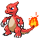

-
Bulbasaur #001

- Grama
- Veneno
Há uma semente de planta em sua costas desde o dia que este Pókemon nasce. A semente cresce lentamente.
-
Ivysaur #002
- Grama
- Veneno
Quando o bulbo em suas constas cresce parece perder a capacidade de ficar de pé suas patas traseiras.
-
Venusaur #003
- Grama
- Veneno
Venusaurus (フシギバナ, Fushigibana ), ou simplesmente Venusaur , é um Pokémon do tipo Grama / Veneno . É o mascote de Pokémon Green e Pokémon LeafGreen e a forma final de Bulbasaur .
-
Charmander #004

- Fogo
Charmander (ヒトカゲ, Hitokage ) é um Pokémon do tipo Fogo introduzido na Geração I
-
Charmeleon #005
- Fogo
Charmeleon (リザード, Rizaado) is a Fire-type Pokémon introduced in Generation I.
-
Charizard #006
- Fogo
- voando
It can Mega Evolve into either Mega Charizard X, using the Charizardite X or Mega Charizard Y, using the Charizardite Y. It has a Gigantamax form. Mega Charizard X has its Flying changed into Dragon-typing.
-
Squirtle #007

- Água
Squirtle é um Pokémon Tipo Água. Ele evolui para Wartotle no nivel 16 e depois para Blastoise no nível 36 , Junto com Charmander e Bulbasaur ele é um dos 3 Pokémons Iniciais de Kanto .
-
Wartortle #008
- Água
Wartortle é o pokémon #8 da primeira geração. Uma versão mais emplumada do Squirtle, depois de uma série de tratamentos fisionomicos em um salão de beleza mais próximo de um centro pokémon, transformando o seu Squirtle em uma tartaruga transformista. Por ser um dos primeiros pokémons a serem inventados, hoje é bastante desconhecido, apenas por estar atrás de mais 2849593 pokémons.
-
Blastoise #009

- Água
Blastoise é o pokémon #9 da primeira geração. Uma tartaruga gigante que mete medo em populações inteiras do Japão e da China. O Blastoise é a prova clara de que esses velhotes que inventam os pokémons são uns plagiadores, e inventaram um bichinho que é uma cópia descarada do vilão do Mario, o Bowser, só deram uma repintada e o deixaram mais azul.
-
Caterpie #010

- Insertor
Caterpie é um pokémon do tipo verme. Ele costuma se encontrar em qualquer floresta, normalmente só é capturados por treinadores idiotas que não tem competência de capturar algo mais forte ou para usá-lo em pegadinhas, para assustar as garotas.
-
Metapod #011

- Insertor
- crisálida
Metapod é um pequeno pokemon inseto, fraco, frágil e insolente, que não serve para nada, apenas para chatear a vida do Ash, e para ter mais do que 1.000 pokemons. Não tem quase nenhum ataque, ele nem ao menos se mexe. É a evolução do Caterpie, o que era de se esperar (os dois são inuteis), pois uma família de pokemons insetos nunca ia ser forte, apenas animais sedentários, feiosos e que dão mais medo a Misty que o normal, com exceção especial da família do Scyther.
-
Butterfree #012

- Insertor
- Voando
Butterfree (バタフリー) is the 12th Pokémon in the Pokédex. It is a Bug/Flying Type, and is known as the Butterfly Pokémon. Butterfree uses the Compound Eyes Ability. This Ability raises the Accuracy of this Pokémon's attack by 30%. Butterfree's Hidden Ability is the Tinted Lens Ability, which doubles the power of attacks that are "not very effective."
-
Pichu #013
- Eletricor
Pichu é uma desgraçada antievolução do Pikachu, mas como todos sabem, ela nem devia existir, porque nunca ninguém vai querer ter ele mesmo, a não ser que você seja um idiota um típico cara que quer completar aquela bagaça de Pokedex só vai ter preferência ao Pikachu. O Pichu é um pokémon que surgiu e passou despercebido, por isto é o número #172 na national dex.
-
Pikachu #014

- Eletricor
Ok, provavelmente você acessou este link pra saber coisas sobre um certo Pikachu em questão (ou você pode ter entrado sem querer nesta página, mas já que leu até aqui, continue), e é claro que estamos falando do Pokemon principal da serie Pokemon, do rato elétrico mais querido do mundo: O Pikachu do Ash.
-
Raichu #015

- Eletricor
Raichu é um pokémon rato elétrico, propriamente dito, é a evolução do Pikachu, e a mais forte da família do Pichu, mais ninguém evolui o seu Pikachu para um Raichu, pois são pessoas burras que pensam que o Pikachu é o melhor pokemon do mundo, e ganha até do Arceus. Além disso Raichus são muito menos gays e aquela pegadinha com a palavra pika não funciona neles. Se você for aquelas pessoas super cultas que sabem realmente sobre pokemon (o que eu duvido), fica até com uma dor no coração de ouvir um n00b falando isto.